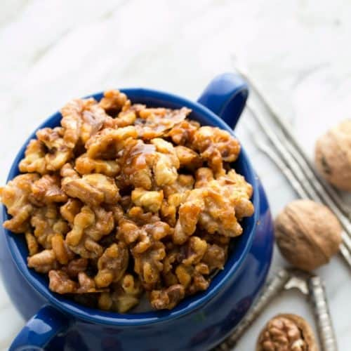

Candied Walnuts

Candied Walnuts
Candied walnuts sound like a big under taking but these sweet treats can be made in less then 10 minutes.
Ingredients
- 1 cup walnuts
- 1/4 cup sugar
- 1 tablespoon butter
- 1/2 teaspoon cinnamon
Steps
- Add ingredients to a saucepan and heat to medium high
- Stir constantly for 5 minutes careful not to let it burn
- Remove from heat and put on parchment paper
- Allow to cool for 5 minutes